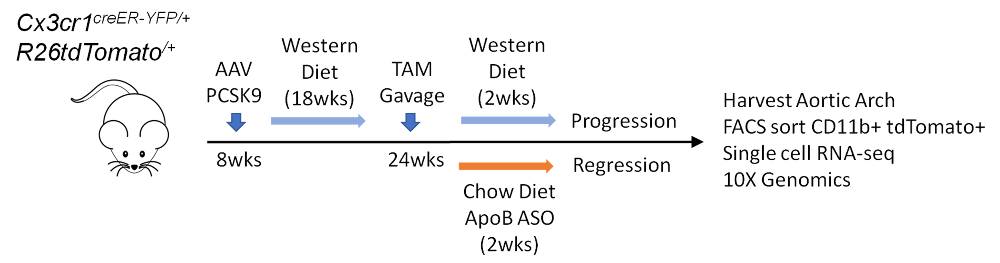
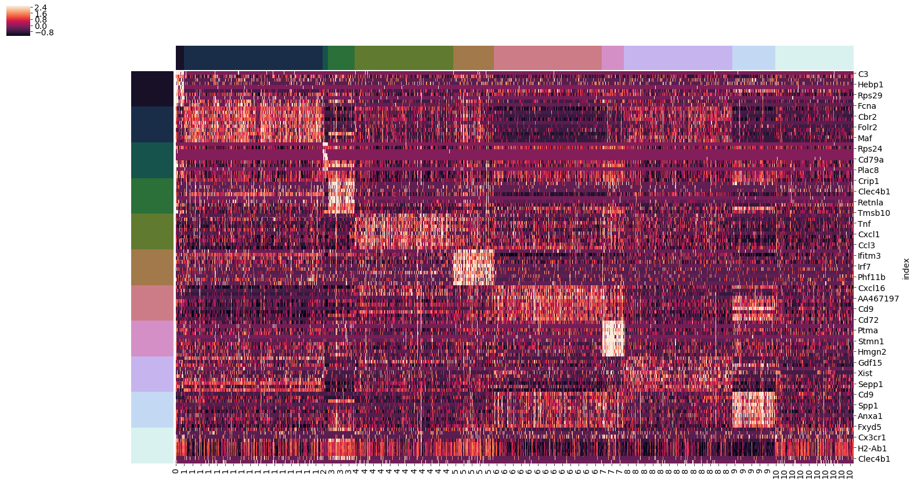

Single-cell RNA sequencing reveals heterogeneity of plaque macrophages derived from CX3CR1+ monocytes in atherosclerosis progression and regression
Jian-Da Lin, Hitoo Nishi, Jordan Poles, Caroline Mccauley, Karishma Rahman, Ashly Hine, Nikollaq Vozhilla, Edward A. Fisher and P'ng Loke
Abstract:
- We have previously shown that atherosclerosis progression and regression are strongly associated with the M1/M2 activation status of inflammatory monocyte-derived macrophage populations in atherosclerotic plaques. However, the dynamics of monocyte colonization and transformation to resident macrophage populations during either plaque progression or regression are poorly understood. - We use a combination of tamoxifen inducible fate mapping and single-cell RNA sequencing to profile arterial plaque-resident cells derived from CX3CR1+ monocyte precursors in mice. - Overall, this study highlights previously unidentified genes and programs in macrophages associated with atherosclerosis progression and regression, uncovering the unexpected plasticity of CX3CR1+ monocyte derived cells and the role they may play in the dynamics of an atherosclerotic plaque.
Guding Questions:
1) Identify the population of origin for plaque-resident macrophages
- What genes are highly expressed in this population?
- What cell type does this population resemble?
- What are the characteristic expression patterns of each cluster?
- Are certain cell populations preferentially found in each experimental group?
- What genes are over-expressed in each experimental group?
Methods:
Transgenic Mice
- Cx3cr1CreERT2-IRES-EYFP mice which express a tamoxifen (TAM)-inducible Cre recombinase (CreERT2) under the control of the endogenous Cx3cr1 promoter, followed by an IRES-EYFP element - Further traced the fate of Cx3cr1Cre+ cells without adoptive transfers by crossing those mice with Rosa26stop-tdTomato reporter mice.Treatment Groups
Cells Extracted and Processed
Single Cell Preprocessing
- Using the Cellranger analysis pipeline (cellranger mkfastq + count + aggr) provided by 10X Genomics, clean data files were generated. - Data was then preprocessed to remove noisey samples and genes.Single Cell Clustering and Feature Selection
- 32 principal compenents were derived by PCA and used to perform Louvain community detection, and t-SNE visualization. - Scanpy used to perform One vs Rest statistical testing with the overestimated-variance T-test, allowing for identification of genes which were significantly overexpressed in each Louvain cluster (Wolf 2018).Diffusion Pseudotime Analysis
- Scanpy employed in order to generate a diffusion map reconstructing the divergence of cell lineages. - Scanpy then used to generate diffusion pseudotime (DPT) values for each cell relative to a Cx3cr1 high root cell (Wolf 2018).Fluorescence Microscopy:
- Newly recruited CX3CR1-EYFP+ monoytes were found mostly in the plaque lumen - Differentiating YFP+TdTomato+ monocytes and converted CX3CR1-YFP-TdTomato+ macrophages were observed in the adventitia or lipid core of plaque
Visualization of Single Cell Clustering:
- Louvain community detection algorithm found 11 clusters of cells within the combined cells from both experiemntal groups. - PCA (32 dim.) decomposition of the data is followed by t-SNE for visualization of the single cell populations in 2-dimensions.
Exp. Group Representation by Cluster:
 - Calculated are the percentage of each experimental groups's cells found in each cluster, and the normalized proportion of each cluster which is composed by each experimental group respectively.
- Groups 2+8 were disproportionately expressed in the regression group, although cluster 8 contains a much larger number of cells.
- Calculated are the percentage of each experimental groups's cells found in each cluster, and the normalized proportion of each cluster which is composed by each experimental group respectively.
- Groups 2+8 were disproportionately expressed in the regression group, although cluster 8 contains a much larger number of cells.
Heterogeneity of Louvain Clusters:

Louvain Clusters:
- Shown are the top 10 differentially expressed genes by Louvain cluster on the y-axis, with each of the single cell observations on the x-axis.
- Distinct blocks of elevated expression appear for each cluster, with some similarity between select clusters.
Diffusion Pseudotime:
- Ran diffusion pseudotime, which uses a random-walk based model in order to reconstruct the path taken by differentiating cells. - Cx3cr1 positive cell population, largely localized in louvain cluster 7, falls at the far end of the diffuion map, suggesting it is either a start or endpoint of differentiation.
References:
- Haghverdi, L., Buettner, F., & Theis, F. J. (2015). Diffusion maps for high-dimensional single-cell analysis of differentiation data. Bioinformatics, 31(18), 2989-2998.
- Wolf, F. A., Angerer, P., & Theis, F. J. (2018). SCANPY: large-scale single-cell gene expression data analysis. Genome biology, 19(1), 15.